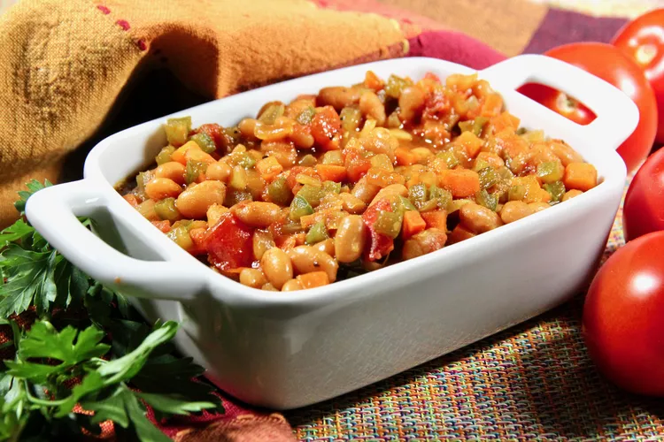

Chakalaka Recipe

Soulful Spice: Discover the Vibrant Flavors of Chakalaka
Chakalaka, a spirited South African relish, bursts with a lively medley of flavors and textures.
A harmonious blend of vegetables, beans, and aromatic spices, this vibrant creation offers a delightful balance between a zesty kick and a comforting embrace.
Its rich, saucy character invites you on a flavorful journey, celebrating the heartwarming essence of African cuisine with every delectable spoonful.
Ingredients
- 1 tablespoon oil
- 3 medium onions, diced
- 2 medium green bell peppers, diced
- 3 medium carrots, diced
- 3 medium tomatoes, diced
- 2 small Thai green chillies, chopped
- 1/4 cup water
- 1 cube vegetable bouillon
- 1 teaspoon curry powder, or to taste
- 1 teaspoon chili powder
- salt and ground black pepper to taste
Steps
- Heat oil in a skillet over medium heat; stir in onions and bell peppers. Cook and stir until the onion has softened and turned translucent(clear), about 5 minutes.
- Add carrots, tomatoes, green chillies, water, bouillon cube, curry powder, chili powder, salt, and pepper. Cook until mixture is well combined and thickened, 15 to 20 minutes.